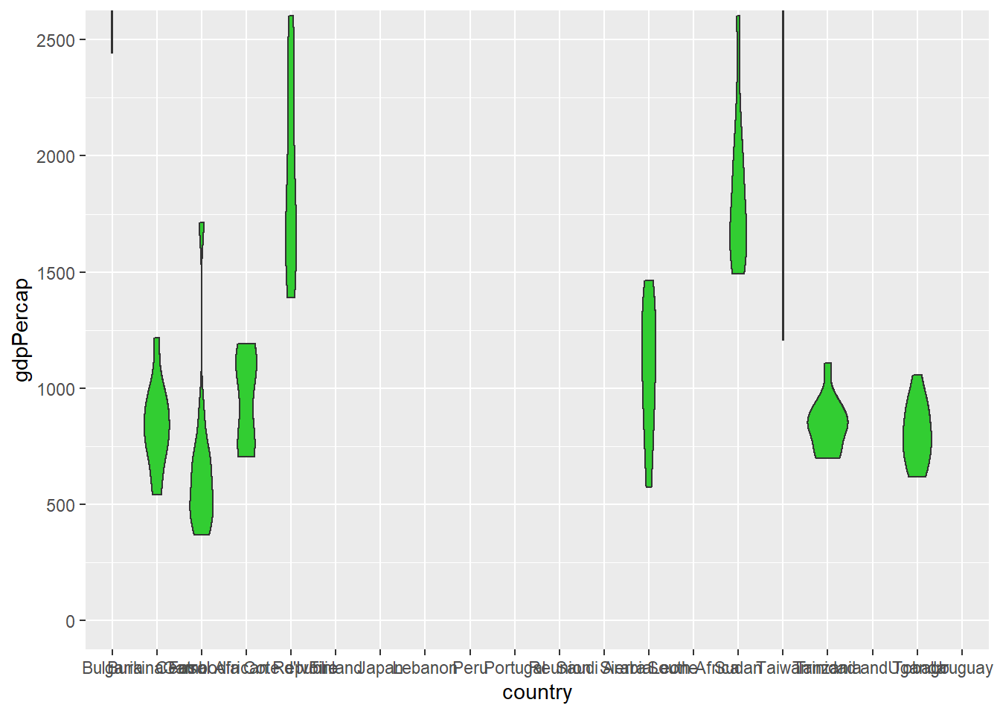

Setup
Because it is a core tidyverse package, ggplot2 is installed for you when you install the tidyverse meta-package. However, if you’re just joining the blog series now, you can install ggplot2 using install.packages():
install.packages("ggplot2") #only run this if you haven't installed ggplot2 before (or updated it in a while)
install.packages("palmerpenguins") #contains the data we need
or
install.packages("tidyverse") #if you want to install/update the other core tidyverse packages too
install.packages("palmerpenguins")
I also recommend installing a few add on packages that enhance/supplement ggplot2’s capabilities (to be demonstrated in examples)
install.packages(c("viridis", "RColorBrewer", "ggsci", #colour palettes
"ggthemes", #additional themes
"extrafont", #additional font family options
"ggrepel", #to avoid overlapping labels
"patchwork", #multi-plot arrangements/combinations
"plotly", #interactive plots
"gganimate" #animated ggplots
))
remotes::install_github("thomasp85/transformr") #enables gganimate to transition between different polygons
Then just load these like any other R package, with the library() function:
library(tidyverse) #I'm loading ggplot2 with the rest of the core tidyverse packages
#or library(ggplot2) to just load ggplot2
I’m also going to load elucidate for data interrogation and import the penguins data from the palmerpenguins package with the data() function. The remaining packages introduced in this post will be loaded later on when they are needed.
library(elucidate) #for data exploration/interrogation functions
#load data from an R package with the data function & package argument (could also import it by loading the package)
data(penguins, package = "palmerpenguins")
Next, we take our usual step of checking the structure of the data with the dplyr::glimpse() function (also loaded with the tidyverse).
glimpse(penguins)
## Rows: 344
## Columns: 8
## $ species <fct> Adelie, Adelie, Adelie, Adelie, Adelie, Adelie, Adel~
## $ island <fct> Torgersen, Torgersen, Torgersen, Torgersen, Torgerse~
## $ bill_length_mm <dbl> 39.1, 39.5, 40.3, NA, 36.7, 39.3, 38.9, 39.2, 34.1, ~
## $ bill_depth_mm <dbl> 18.7, 17.4, 18.0, NA, 19.3, 20.6, 17.8, 19.6, 18.1, ~
## $ flipper_length_mm <int> 181, 186, 195, NA, 193, 190, 181, 195, 193, 190, 186~
## $ body_mass_g <int> 3750, 3800, 3250, NA, 3450, 3650, 3625, 4675, 3475, ~
## $ sex <fct> male, female, female, NA, female, male, female, male~
## $ year <int> 2007, 2007, 2007, 2007, 2007, 2007, 2007, 2007, 2007~
glimpse() tells us that there are 344 rows and 8 columns in the penguins data, two of which are numeric/double vectors (bill_length_mm and bill_depth_mm), three are integer vectors (flipper_length_mm, body_mass_g, and year), and three are factors (species, island, and sex).
Next, we use elucidate::dupes(), elucidate::counts_tb_all(), and elucidate::describe_all() to check for duplicates, suspicious values, and missingness.
dupes(penguins)
## No column names specified - using all columns.
## No duplicates detected.
## # A tibble: 0 x 9
## # ... with 9 variables: species <fct>, island <fct>, bill_length_mm <dbl>,
## # bill_depth_mm <dbl>, flipper_length_mm <int>, body_mass_g <int>, sex <fct>,
## # year <int>, n_copies <int>
describe_all(penguins, output = "dt")
## $factor
## variable cases n na p_na n_unique ordered
## 1: species 344 344 0 0.000 3 FALSE
## 2: island 344 344 0 0.000 3 FALSE
## 3: sex 344 333 11 0.032 3 FALSE
## counts_tb
## 1: Adelie_152, Gentoo_124, Chinstrap_68
## 2: Biscoe_168, Dream_124, Torgersen_52
## 3: male_168, female_165
##
## $numeric
## variable cases n na p_na mean sd se p0 p25
## 1: bill_length_mm 344 342 2 0.006 43.922 5.460 0.295 32.1 39.225
## 2: bill_depth_mm 344 342 2 0.006 17.151 1.975 0.107 13.1 15.600
## 3: flipper_length_mm 344 342 2 0.006 200.915 14.062 0.760 172.0 190.000
## 4: body_mass_g 344 342 2 0.006 4201.754 801.955 43.365 2700.0 3550.000
## 5: year 344 344 0 0.000 2008.029 0.818 0.044 2007.0 2007.000
## p50 p75 p100 skew kurt
## 1: 44.45 48.5 59.6 0.053 -0.876
## 2: 17.30 18.7 21.5 -0.143 -0.907
## 3: 197.00 213.0 231.0 0.346 -0.984
## 4: 4050.00 4750.0 6300.0 0.470 -0.719
## 5: 2008.00 2009.0 2009.0 -0.054 -1.505
counts_tb_all(penguins, n = 2)
## $species
## top_v top_n bot_v bot_n
## 1 Adelie 152 Chinstrap 68
## 2 Gentoo 124 Gentoo 124
##
## $island
## top_v top_n bot_v bot_n
## 1 Biscoe 168 Torgersen 52
## 2 Dream 124 Dream 124
##
## $bill_length_mm
## top_v top_n bot_v bot_n
## 1 41.1 7 32.1 1
## 2 45.2 6 33.1 1
##
## $bill_depth_mm
## top_v top_n bot_v bot_n
## 1 17 12 13.1 1
## 2 15 10 13.2 1
##
## $flipper_length_mm
## top_v top_n bot_v bot_n
## 1 190 22 172 1
## 2 195 17 174 1
##
## $body_mass_g
## top_v top_n bot_v bot_n
## 1 3800 12 2700 1
## 2 3700 11 2925 1
##
## $sex
## top_v top_n bot_v bot_n
## 1 male 168 female 165
## 2 female 165 male 168
##
## $year
## top_v top_n bot_v bot_n
## 1 2009 120 2007 110
## 2 2008 114 2008 114
These checks don’t reveal any obvious issues aside from a few missing values. Approaches to dealing with missing values will be covered in detail in the next post, so for now we’ll just drop the rows with missing values via na.omit() to keep things simple.
nrow(penguins)
## [1] 344
penguins2 <- na.omit(penguins)
nrow(penguins2)
## [1] 333
ggplot2 basics
The first thing you need to know about the mechanics of ggplot2 is that it builds plots in layers. This feature means that you can modify and add components to a graph by simply adding a layer to it, which makes it incredibly flexible. Unfortunately this flexibility can also be confusing for new users especially if they’ve only ever seen code for highly complex graphs that contain many layers. In my personal R learning journey, I found ggplot2 to be a lot more intuitive when I realized that there are only 3 layers you need to build a basic graph:
The initialization layer, which is just using the ggplot() function to tell R that you want to initialize a ggplot graphical object. I find it helpful to think of this as creating the blank canvas upon which the graph will be drawn.
The aesthetic layer, added via the aes() function, is used to define aesthetic mappings, i.e. the assignment of variables in the data frame specified in the “data” argument of the initialization layer to visual features of the plot.
- In general, if you want a graphical feature of a ggplot to be based on the levels of a variable, you map the unquoted name of the variable to the feature inside the
aes() function. For example, in the Palmer penguins data we could assign a different colour to the graphed values for each penguin species with aes(colour = species), independently of the plot geometry (scatter plot, bar graph, box plot, etc.). In contrast, if you want to set a graphical parameter to a specific value that will be applied to all geometric objects of the same class that are drawn on the graph, like making all points on a scatter plot blue, you would use colour = "blue" without the aes() part in a geom_point() layer (i.e. geom_point(colour = "blue")). This tells R that you want to set the colour of all geometric objects from the same layer (e.g. points on a scatter plot) to a specific colour, rather than assigning distinct colours to each level of a variable. Aesthetic mappings are the most conceptually challenging part of learning ggplot2, but their meaning will become clear after seeing some examples.
- A geometry layer to define the spatial features of the graph. There are many geometries available in
ggplot2 as intuitively named functions beginning with geom_*. Some of more commonly used ones are:
geom_histogram() = histograms
geom_density() = kernel density plots
geom_bar() = bar charts
geom_point() = scatter plots
geom_box() = box-and-whisker plots
geom_violin() = violin plots
geom_line() = line graphs
geom_error() = error bars
geom_smooth() = adds lines for conditional mean estimates (i.e. regression lines)
You can visit the ggplot2 reference page here for a full list. It is worth mentioning that the ggplot2 layering system allows you to overlay multiple geometric layers on the same plot (just add another layer), a feature that was not obvious to me when I was starting to learn it.
You also need to know that layers are added to a ggplot using the + symbol instead of the pipe operator (%>%), where:
ggplot(data = penguins2) + #or equivalently penguins2 %>% ggplot() +
aes(x = body_mass_g) +
geom_histogram()

…can be read as: “initialize a ggplot while setting the data frame penguins2 as the default dataset to use for aesthetic mappings, then add a layer of aesthetic mappings where the variable ‘body_mass_g’ is to be assigned to the x-axis of the graph, then add a geometry layer that tells R to draw a histogram of that variable.”
N.B. The magrittr package’s pipe operator (%>%) was covered in an earlier post.
It is more common to see the aes() layer embedded in the initialization layer via ggplot()’s “mapping” argument, like this:
penguins2 %>%
ggplot(mapping = aes(x = body_mass_g)) + #or ggplot(penguins2, aes(x = body_mass_g))
geom_histogram()
As you can clearly see, these are effectively identical in that they both define global aesthetic mappings that are “inherited” by all subsequent layers (geom_histogram() in this example) unless the “inherit.aes” argument in those layers is set to FALSE, e.g.
ggplot(penguins2) +
aes(x = body_mass_g) +
geom_histogram(inherit.aes = FALSE)
## Error: stat_bin() requires an x or y aesthetic.
This time I get an error that stat_bin(), which is a function called by geom_histogram(), “requires an x or y aesthetic” (variable mapping), because I’ve told geom_histogram() to ignore the global/default mappings for the ggplot by setting “inherit.aes”. In practice you probably won’t use “inherit.aes” much because you can also just overwrite a mapping for a specific layer by using that layer’s “mapping” argument like this:
penguins2 %>%
ggplot(aes(x = body_mass_g)) +
geom_histogram(mapping = aes(x = flipper_length_mm))
## `stat_bin()` using `bins = 30`. Pick better value with `binwidth`.
Now we end up with a histogram that plots the binned distribution of the flipper_length_mm variable (as per the new x-axis mapping in the geom_histogram() layer) but the x-axis title still reads “body_mass_g” because the rest of the plotting components (of which axis titles are one) are affected by the default/global x-axis mapping we set to the body_mass_g variable in the ggplot() layer.
- The key point here is when you map a variable, like penguin body mass in grams, to an aesthetic parameter of a ggplot with the
aes() function, in either the ggplot() initialization layer of the graph, like this:
penguins2 %>%
ggplot(aes(x = body_mass_g))
…or as a separate layer, like this:
penguins2 %>%
ggplot() +
aes(x = body_mass_g)
…then that mapping of body mass to the x-axis will be applied by default to all layers of the plot. So you can add a second geom to the plot, like rug lines to density plot of body mass for each species…
penguins2 %>%
ggplot() +
aes(x = body_mass_g) +
geom_density() +
geom_rug()
…and each geom_* layer uses penguin body mass as the x-axis variable. If you only want to assign a variable aesthetic mapping to affect a single geom, then pass the aes() portion to the chosen geom_* layer’s “mapping” argument instead, as in:
penguins2 %>%
ggplot() +
geom_density(aes(x = body_mass_g)) +
geom_rug()
This time the rug lines aren’t rendered because I’ve only assigned penguin body mass to the x-axis of the geom_density() layer and geom_rug() has no idea what is supposed to go on the x-axis.
aesthetic customization
This section introduces fundamental methods of customizing ggplot aesthetic parameters, many of which can be either mapped to a variable within the aes() function, or applied globally outside of the aes() function.
titles/labels
To correct the title in the previous density plot we could use an xlab() layer (short for “x-axis label”), but I prefer the labs() function instead because you can use it to modify multiple labels/titles in the same layer, e.g. both the x and y axis labels:
penguins2 %>%
ggplot(aes(x = body_mass_g)) +
geom_histogram() +
labs(x = "body mass (g)", y = "count (using 30 bins)")
Other labels that can be modified with labs() layer include:
“title”: the title of the ggplot, which appears at the top and is left-aligned by default.
“subtitle”: a subtitle for the ggplot that is in a slightly smaller font size and positioned just below the title (if there is one)
“caption”: a caption for the ggplot, which appears at the bottom and is right-aligned by default.
“tag”: adds a tag to the plot. Think about this as putting a letter “a” (or whatever text you want) in the top left corner of the graph (by default) to tag it as part a of multi-plot figure.
“colour”/“color”: if a variable has been assigned to “colour” (“color” is also valid if you prefer); this controls the title of colour legend.
“fill”: if a variable has been assigned to “fill”, this controls the title of fill legend.
“size”: if a variable has been assigned to “size”, this controls the title of size legend.
“shape”: if a variable has been assigned to “shape”, this controls the title of shape legend.
“linetype”: if a variable has been assigned to “linetype”, this controls the title of the linetype legend.
N.B. you can remove any of these labels by setting them to NULL in a labs() layer, e.g.:
penguins2 %>%
ggplot(aes(x = body_mass_g)) +
geom_histogram() +
labs(x = "body mass (g)", y = NULL,
caption = "source: palmerpenguins R package")
fill
The fill aesthetic in ggplot2 controls the fill colour of ggplot geometric components. You can either map a variable to fill using the aes() function,
penguins2 %>%
ggplot(aes(x = body_mass_g)) +
geom_histogram(aes(fill = species)) +
labs(fill = "Species")
…or you can set it to a single value (as a character string) to be applied globally by specifying it in the geometry layer outside of aes().
penguins2 %>%
ggplot(aes(x = body_mass_g)) +
geom_histogram(fill = "blue2")
As you can see, when you assign a variable to the fill (colour) aesthetic, you get different fill colours for each value/level of the specified variable, which is a convenient way of splitting the data in a ggplot. You’ll also get a legend by default. Other aesthetics covered below behave similarly (colour, shape, size, etc.).
Recall from the last post that we can see the colour options available in base R via elucidate::colour_options()…
elucidate::colour_options()
 …which will be easy to read if you run it yourself and expand it to full screen viewing mode.
…which will be easy to read if you run it yourself and expand it to full screen viewing mode.
ggplot2 also provides scale_* functions that give you finer control over many aesthetic features of the graphs you build. For example, we can add a scale_fill_manual() layer to change the fill colours assigned to groups in a histogram…
penguins2 %>%
ggplot(aes(x = body_mass_g)) +
geom_histogram(aes(fill = species)) +
scale_fill_manual(values = c("royalblue3", "darkorchid2", "green3"))
…or scale_fill_continuous()/scale_fill_gradient() if a continuous variable has been assigned to the fill aesthetic in a scatter plot.
penguins2 %>%
ggplot(aes(x = bill_length_mm, y = bill_depth_mm, fill = body_mass_g)) +
geom_point(shape = 21, size = 4) +
scale_fill_continuous(low = "blue", high = "red")
colour/color
The colour aesthetic in ggplot2 controls the outline colour of ggplot geometric components. Note that both the British/Canadian (colour) and American (color) English spellings are valid thanks to the ggplot2 authors. Like fill, you can either map a variable to outline colour using the aes() function,
penguins2 %>%
ggplot(aes(x = body_mass_g)) +
geom_histogram(aes(colour = species))
…or you can set it to a single value (outside of aes()).
penguins2 %>%
ggplot(aes(x = body_mass_g)) +
geom_histogram(colour = "blue2",
fill = "white")
For finer control, you can use scale_colour_manual()…
penguins2 %>%
ggplot(aes(y = body_mass_g, x = species, colour = species)) +
geom_boxplot() +
scale_colour_manual(values = c("green3", "blue3", "red2"))
…or scale_colour_continuous(), just like the scale_fill_* functions. If you want to specify more than 2 colours to use in constructing a colour gradient, then try the scale_colour_gradientn() function instead.
penguins2 %>%
ggplot(aes(x = bill_length_mm, y = bill_depth_mm, colour = body_mass_g)) +
geom_point(shape = "square", size = 4) +
scale_colour_gradientn(colours = c("blue", "yellow", "red")) #in order from low to medium to high
reorering factors
To move the box plot for Gentoo penguins to the far left in the second last graph, we can use forcats::fct_relevel() in a call to dplyr::mutate() before passing the data to the ggplot() function.
penguins2 %>%
mutate(species = fct_relevel(species, "Gentoo")) %>%
ggplot(aes(y = body_mass_g, x = species, colour = species)) +
geom_boxplot() +
#the order of colours should match the order of factor levels
scale_colour_manual(values = c("green3", "blue3", "red2"))
See the earlier post on factors and the forcats package for more information on manipulating factor levels in R.
colour palettes
If you don’t want to pick individual colours to use yourself, you should be aware that there are several packages that provide conveniently organized colour palettes. See this link for the most comprehesive list I’ve come across so far. For the purposes of this blog post I will only cover four of these packages: the RColorBrewer, ggsci, colorblindr, and viridis packages.
RColorBrewer, which is installed automatically for you with ggplot2, was perhaps the first package to offer convenient color palettes for data visualization in R, and provides three types of palettes: sequential, diverging, and qualitative. According to the package documentation:
Sequential palettes are appropriate for ordered variables that progress from low to high values, where low values are assigned light colours and high values are assigned dark colours. Sequential palettes are useful if you want to emphasize extreme values.
Diverging palettes are useful when you want to place equal emphasis on low, middle, and high values of an ordered variable.
Qualitative palettes are useful for unordered categorical variables where the goal is to simply use distinct colours for each group. I tend to use these ones most often out of the RColorBrewer palettes.
You can view the RColorBrewer palette options in your R session’s active graphics device (e.g. R studio “plot” tab) with RColorBrewer::display.brewer.all(). Here I’ll show you the different palette types separately so they all appear on the screen legibly, but you will be able to see them all at once if you run the default display.brewer.all() command yourself.
#sequential
RColorBrewer::display.brewer.all(type = "seq")

#diverging
RColorBrewer::display.brewer.all(type = "div")

#qualitative
RColorBrewer::display.brewer.all(type = "qual")

ggplot2 provides scale_fill_brewer() and scale_colour_brewer() (or scale_color_brewer() if you prefer) as convenience functions that allow you to access these palettes via the “palette” argument. E.g.
penguins2 %>%
ggplot(aes(x = body_mass_g)) +
geom_histogram(aes(fill = species)) +
scale_fill_brewer(palette = "Dark2")
Alternatively, you can use the RColorBrewer::brewer.pal() function with the “n” and “name” arguments to generate a character vector of colour names of length n that can be passed to any plotting function in R.
RColorBrewer::brewer.pal(n = 3, name = "Set1")
## [1] "#E41A1C" "#377EB8" "#4DAF4A"
penguins2 %>%
ggplot(aes(x = body_mass_g)) +
geom_histogram(aes(fill = species)) +
scale_fill_manual(values = RColorBrewer::brewer.pal(n = 3, name = "Set1"))
Those of us who are interested in publishing our work in peer-reviewed journals may be interested in using the ggsci package, which provides palettes inspired by common colour schemes used by prominent journals, like Nature, Science, JAMA, and The New England Journal of Medicine (and several others inspired by science fiction). When ggsci is loaded, you can access these palettes with additional scale_fill_* and scale_colour/color_* functions, where * can be any of the ggsci palette names. See the package website for a full list. For the sake of brevity, I will just demonstrate the Nature-themed palette because, like most other scientists, I’ve always dreamed of one day publishing in Nature.
library(ggsci)
penguins2 %>%
ggplot(aes(y = body_mass_g)) +
geom_boxplot(aes(fill = species)) +
scale_fill_npg() #npg = Nature Publishing Group
As soon as you have some data worthy of publication in Nature (good luck!) you’ll now have no trouble making figures for it!
colourblind-friendly palettes
To assess the friendliness of your graphs to colour blind individuals, you should check out the website for the colorblindr package by ggplot2’ developer and author of The Fundamentals of Data Visualization, Claus Wilke. You can even upload an image file of a finished graph and simulate how it will look like to colour blind individuals with this cool simulation tool.
The viridis package’s colour palettes are all colourblind-friendly, examples of which are shown here.
viridis doesn’t come with a built-in convenience function to display all of the colour palettes at once, but we can show them each using scales::show_col() and viridis::viridis_pal(). Five options can be displayed this way:
#both of these packages are installed for you with ggplot2 so we can just load them
library(scales)
library(viridis)
## Warning: package 'viridisLite' was built under R version 4.0.5
show_col(viridis_pal(option = "magma")(9)) #equivalent to option = "A".
show_col(viridis_pal(option = "inferno")(9)) #equivalent to option = "B".
show_col(viridis_pal(option = "plasma")(9)) #equivalent to option = "C".
show_col(viridis_pal(option = "viridis")(9)) #the default, equivalent to option = "D".
show_col(viridis_pal(option = "cividis")(9)) #equivalent to option = "E".
We can use one of these palettes in a ggplot with viridis::scale_fill_viridis() or viridis::scale_colour_viridis() (or viridis::scale_color_viridis())
penguins2 %>%
ggplot(aes(x = body_mass_g)) +
geom_density(aes(fill = species)) +
scale_fill_viridis(option = "viridis", #the default
discrete = TRUE)
#discrete = TRUE needs to be added here to use
#scale_*_viridis() for a discrete variable
size
The obviously named “size” aesthetic parameter adjusts the size of a geom. Like other ggplot2 aesthetics, you would either assign a numeric variable to size in aes()…
penguins2 %>%
ggplot(aes(x = bill_length_mm, y = bill_depth_mm,
size = body_mass_g)) + #point size will be proportional to body_mass_g
geom_point(colour = "blue2") #scatter plot
…or set the geom size to a specific value.
penguins2 %>%
ggplot(aes(x = bill_length_mm, y = bill_depth_mm)) +
geom_point(colour = "blue2", size = 4)
As you can see, setting an additional continuous variable to the size aesthetic of a scatter plot is an easy way to explore relationships between 3 variables at once (also called a “bubble chart”). I also find it easier to read than extending the plot into a third spatial dimension, which we can do with plotly instead of ggplot2:
penguins2 %>%
plotly::plot_ly(x = ~bill_length_mm,
y = ~bill_depth_mm,
z = ~body_mass_g,
type = "scatter3d",
color = I("blue2"))
#hint: try hovering your mouse over this plot and clicking/dragging it in
#different directions to rotate it.
N.B. I recommend against using 3D scatter plots like this for anything other than data exploration on your own or if you are planning to personally demonstrate the relationships between the three variables by rotating the graph for an audience.
shape
As you may have guessed, the “shape” parameter affects the shape of the chosen geom, which is typically the points of a scatter plot. You can either map a categorical variable to it…
penguins2 %>%
ggplot(aes(x = bill_length_mm, y = bill_depth_mm,
shape = island)) +
geom_point(size = 3) #scatter plot

…or set it to a specific shape choice (see here for options).
penguins2 %>%
ggplot(aes(x = bill_length_mm, y = bill_depth_mm)) +
geom_point(size = 3, shape = 21)
linetype
Changes the type of line (solid, dashed, dotted, etc.) in a line graph. Set globally in the geom_line() layer…
penguins2 %>%
mutate(year = factor(year, ordered = TRUE)) %>%
group_by(year) %>%
summarise(avg_body_mass_g = mean(body_mass_g), .groups = "drop") %>% #to get a single value per year
ungroup() %>%
ggplot(aes(x = year, y = avg_body_mass_g)) +
geom_line(aes(group = 1), linetype = "dashed", size = 1.5)
#set the group aesthetic to 1 to disable grouping of lines
…or map a categorical variable to it with aes():
penguins2 %>%
mutate(year = factor(year, ordered = TRUE)) %>%
group_by(year, species) %>%
summarise(avg_body_mass_g = mean(body_mass_g), .groups = "drop") %>% #to get a single value per year
ungroup() %>%
ggplot(aes(x = year, y = avg_body_mass_g)) +
geom_line(aes(group = species, linetype = species), size = 1.5)
#In aes() for geom_line(), "group" splits the lines and "linetype" assigns a
#different line type to each group
alpha (transparency/opacity)
The “alpha” aesthetic adjusts the transparency of a geom and can be specified using a value ranging between 0 (0% opaque/100% transparent) and 1 (100% opaque/0% transparent). It is especially helpful in cases where “overplotting” obscures some of the data because there are too many overlapping elements, like the scatter plot I made of penguin bill depth by bill length…
penguins2 %>%
ggplot(aes(x = bill_length_mm, y = bill_depth_mm)) +
geom_point(colour = "blue2", size = 4, alpha = 0.5)

…or density plots of penguin body masses grouped by species.
penguins2 %>%
ggplot(aes(x = body_mass_g, fill = species, group = species)) +
geom_density(alpha = 0.6)
jittering to reduce overplotting
In addition to modifying the transparency of a geom to deal with overplotting, we can also slightly move geometric objects in random directions, or “jitter” them by adding random noise. This should retain most statistical properties of the data (because the displacements are random), while making it easier to see more of the data. Jittering can be used with any ggplot2 geom that accepts the output of the ggplot2::position_jitter() function as an option for a “position” argument. This is so common in scatter plots that there is even a shortcut function, ggplot2::geom_jitter(), that you can use instead of ggplot2::geom_point(position = position_jitter()).
penguins2 %>%
ggplot(aes(x = bill_length_mm, y = bill_depth_mm)) +
geom_jitter(colour = "blue2", size = 3, alpha = 0.5)
#or, equivalently:
# geom_point(colour = "blue2", size = 3, alpha = 0.5,
# position = position_jitter())
One exception to this advice is the situation when the geom you want to jitter happens to be text, e.g. labels for the species of a penguin that were rendered via ggplot2::geom_text(aes(label = species)), like this:
set.seed(2021) #set random number generator seed for reproducibility
#I'll just sample 50 rows at random (i.e. data for 50 penguins) for demo
#purposes
penguins_sample <- penguins2[sample(seq_len(nrow(penguins2)), 50), ]
penguins_sample %>%
ggplot(aes(x = bill_length_mm, y = bill_depth_mm)) +
geom_jitter(colour = "blue", size = 3, alpha = 0.5) +
geom_text(aes(label = species))
The best option for moving the labels out of the way of the points and other labels is to use the ggplot2 extension package ggrepel, which contains a geom_text_repel() function to repel labels from one another in ggplots. It also conveniently works with geom_jitter(), as shown here:
penguins_sample %>%
ggplot(aes(x = bill_length_mm, y = bill_depth_mm)) +
geom_jitter(colour = "blue", size = 3, alpha = 0.5) +
ggrepel::geom_text_repel(aes(label = species))
That’s so much easier to read!
coordinates
coord_flip()
You can add a coord_flip() layer to your ggplot graph if you want to swap the x and y axes. This can be particularly helpful if you have overlapping tick labels on the x axis, like a long list of countries, as in the gapminder data that we’ve seen many times before in the blog series…
set.seed(2021) #set the random number generator seed for reproducibility
gapminder::gapminder %>%
filter(country %in% sample(unique(gapminder::gapminder$country), 20)) %>% #we'll try to plot 20 for now
ggplot(aes(x = country, y = gdpPercap)) +
geom_violin(fill = "limegreen")
vs.
gapminder::gapminder %>%
filter(country %in% sample(unique(gapminder::gapminder$country), 20)) %>%
ggplot(aes(x = country, y = gdpPercap)) +
geom_violin(fill = "limegreen") +
coord_flip()
coord_cartesian()
coord_cartesian() allows you to zoom in on a portion of the data without dropping any values. Simply set the x-axis or y-axis (viewing) limits with “xlim” or “ylim” as appropriate. This could allow us to zoom into the lower end of the GDP per capita scale in the above violin plots, e.g.
gapminder::gapminder %>%
filter(country %in% sample(unique(gapminder::gapminder$country), 20)) %>%
ggplot(aes(x = country, y = gdpPercap)) +
geom_violin(fill = "limegreen") +
coord_cartesian(ylim = c(0, 2500))

Unfortunately, we can’t combine coord_flip() and coord_catesian() layers in the same ggplot because the last one added will overwrite the first, as per the message that prints to the console when I try it:
gapminder::gapminder %>%
filter(country %in% sample(unique(gapminder::gapminder$country), 20)) %>%
ggplot(aes(x = country, y = gdpPercap)) +
geom_violin(fill = "limegreen") +
coord_cartesian(ylim = c(0, 2500)) +
coord_flip()
## Coordinate system already present. Adding new coordinate system, which will replace the existing one.
To get around this issue, coord_flip() also accepts “xlim” and “ylim” specifications for zooming in on a subset of the data just like coord_cartesian() does.
gapminder::gapminder %>%
filter(country %in% sample(unique(gapminder::gapminder$country), 20)) %>%
ggplot(aes(x = country, y = gdpPercap)) +
geom_violin(fill = "limegreen") +
coord_flip(ylim = c(0, 2500))
N.B. You should avoid setting x or y axis limits with the “limits” argument of scale_x_continuous() or scale_y_continuous() to restrict the range of values that are shown in your graphs; doing so will affect the statistical properties (and shape) of geoms like density curves and regression lines that are drawn based on calculations using data within the limits set by scale_x_continuous() and/or scale_y_continous(). Fortunately, you now know that you can use coord_cartesian() or coord_flip() for this purpose instead so it shouldn’t be a problem for you.
guides (legends)
I’m sure you’ve noticed that whenever we map a variable to an aesthetic parameter inside the aes() function, a guide (AKA legend) is automatically added to the plot for us. If you want to omit a guide, simply set it to FALSE for that aesthetic parameter, like this:
penguins2 %>%
ggplot(aes(x = species, y = body_mass_g, fill = species)) +
geom_violin() +
scale_fill_viridis(discrete = TRUE) +
guides(fill = FALSE)
In this case, it makes sense to omit the guide for fill because it isn’t needed. I suppose the fill colours aren’t needed for this graph either, but you might want to use them for consistency with other plots where the guide was needed.
x & y axis modifications
scale_x_continuous()/scale_y_continuous()
scale_x_continuous() controls the x-axis “breaks”, “limits”, and “labels” when x is a continuous variable. I find it helpful to use the base R seq() function when modifying the axis break points.
penguins2 %>%
ggplot(aes(x = bill_length_mm, y = bill_depth_mm)) +
geom_point(colour = "blue2", size = 4, alpha = 0.5) +
scale_x_continuous(limits = c(30, 60),
breaks = seq(from = 30, #start at
to = 60, #end at
by = 5)) #by this increment
You can also modify the x-axis title/label here with the “names” argument and apply a transformation to the x-axis with with the “trans” argument.
penguins2 %>%
ggplot(aes(x = bill_length_mm, y = bill_depth_mm)) +
geom_point(colour = "blue2", size = 4, alpha = 0.5) +
scale_x_continuous(name = "bill length (mm)",
trans = "reverse",
#keep in mind the transformation when specifying axis limit
#and breaks
limits = c(60, 30),
breaks = seq(60, 30, -5))
See the “trans” argument description with ?scale_x_continuous() for a full list of available transformations and information on custom transformation functions via the scales package function scales::trans_new()
I can’t say that I’ve ever needed to do this before, but you can also move the axis to the opposite side of the graph with the “position” argument (“bottom” or “top” for x-axis, “left” or “right” for y-axis).
penguins2 %>%
ggplot(aes(x = bill_length_mm, y = bill_depth_mm)) +
geom_point(colour = "blue2", size = 4, alpha = 0.5) +
scale_y_continuous(position = "right")
If you want to add a second x/y-axis on the top/right side of a graph you can use the “sec.axis” argument to scale_x_continuous() and/or scale_y_continuous():
penguins2 %>%
ggplot(aes(x = bill_length_mm, y = bill_depth_mm)) +
geom_point(colour = "blue2", size = 4, alpha = 0.5) +
scale_x_continuous(name = "bill length (mm)",
sec.axis = sec_axis(~ . /10, name = "bill length (cm)")) +
scale_y_continuous(name = "bill depth (mm)",
sec.axis = sec_axis(~ . /10, name = "bill depth (cm)"))
#where "." in this case represents the value of the original y axis
Overlaying 2 different geoms with very different y-axis scales is difficult to do in ggplot2 because the lead author, Hadley Wickham, asserts that it is generally bad practice and “fundamentally flawed”.
One non-flawed example of when it would be OK to do this, in my opinion, is overlaying a normal distribution kernel density plot over a histogram, like this:
bw <- 100 #define bin width to be used in the histogram
n_obs <- sum(!is.na(penguins2$body_mass_g)) #count of non-missing observations
#define a function that returns the normal density curve scaled by the bin width
#and number of observations
scaled_dnorm <- function(x) {
dnorm(x, mean = mean(penguins2$body_mass_g), sd = sd(penguins2$body_mass_g)) * (bw * n_obs)
}
penguins2 %>%
ggplot(aes(x = body_mass_g)) +
geom_histogram(binwidth = bw) +
#pass the custom scaled_dnorm function to the fun argument of a
#stat_function() layer
stat_function(fun = scaled_dnorm, colour = "blue2", size = 1.5, alpha = 0.8) +
#then reverse the scaling in the sec.axis = sec_axis() part of
#scale_y_continuous so the secondary y-axis shows the density values
scale_y_continuous(sec.axis = sec_axis(trans = ~./(bw*n_obs), name = "density", labels = scales::scientific)) +
#optionally, make the secondary y-axis the same colour as the density curve
#using theme()
theme(axis.ticks.y.right = element_line(colour = "blue2"),
axis.text.y.right = element_text(colour = "blue2"),
axis.title.y.right = element_text(colour = "blue2"))
scale_x_discrete()/scale_y_discrete()
If a categorical variable has been assigned to the x-axis, as in this box-and-whiskers plot,
penguins2 %>%
ggplot(aes(x = species, y = body_mass_g)) +
geom_boxplot()
you can modify the axis title, labels, factor levels that are displayed, and position with scale_x_discrete().
penguins2 %>%
ggplot(aes(x = species, y = body_mass_g)) +
geom_boxplot() +
scale_x_discrete(name = "Species",
position = "top",
limits = c("Chinstrap", "Gentoo"),
labels = c("C", "G"))
## Warning: Removed 146 rows containing missing values (stat_boxplot).

scale_y_continuous() and scale_y_discrete() are the equivalent functions for the y-axis.
axis label scales
The scales package, a ggplot2 dependency, makes it incredibly easy to reformat x and y axis labels (among other things). For example, if you wanted to insert commas in every three digits of the labels for a continuous variable, you could use scales::label_comma() by passing it to the “labels” argument of scale_x_continuous(), like this:
penguins2 %>%
ggplot(aes(x = body_mass_g, y = flipper_length_mm)) +
geom_point() +
scale_x_continuous(labels = scales::label_comma())
or convert very large/small values, e.g. populations of countries in the gapminder data, to scientific notation on the x axis of a scatter plot with scales::label_scientific()
gapminder::gapminder %>% #using data frame gapminder from the gapminder package
ggplot(aes(x = pop, y = gdpPercap)) +
geom_point(colour = "blue2", size = 2, alpha = 0.5) +
scale_x_continuous(labels = scales::label_scientific())
or add dollar symbols to the GDP per capita values on the y-axis with scales::label_dollar(). It’s definitely worth spending a few minutes to peruse the reference page and take stock of the many options.
While we’re here, I’ll incorporate some other features in the scale_x_continuous() layer by applying a base 10 logarithmic transformation to both axes to spread things out a bit from the bottom-left corner. Perhaps it would also be easier to read if we mapped another variable to the colour aesthetic, like life expectancy, using the “plasma” viridis colour palette.
gapminder::gapminder %>% #using data frame gapminder from the gapminder package
ggplot(aes(x = pop, y = gdpPercap, fill = lifeExp)) +
geom_point(size = 3, alpha = 0.7, colour = "black", shape = 21) +
scale_x_continuous(trans = "log10",
labels = scales::label_scientific()) +
scale_y_continuous(trans = "log10",
labels = scales::label_dollar()) +
scale_fill_viridis(option = "plasma", end = 0.9)
Much better for only a few extra lines of code!
themes
The theme() function in ggplot2 gives you much finer control over graphical features unrelated to the data being plotted, like the background color of the ggplot() foundation layer, or the font typeface (i.e. bold, italic). There are far too many graphical feature modifications accessible to you through theme() to cover them in this post. I will therefore leave it as an exercise to the reader to simply consult the function’s reference page as needed when building graphs.
Fortunately, you won’t need to use the theme() function directly too often, as there are many theme_* shortcut functions that control all non-data elements of a ggplot which are available from ggplot2 itself and expansion packages like ggthemes that you can use instead.
The themes available in ggplot2 itself are:
theme_grey()/theme_gray(); the ggplot2 default
penguins2 %>%
ggplot(aes(x = body_mass_g)) +
geom_density(fill = "blue2", alpha = 0.5) +
theme_grey(base_size = 14) #base_size = 14 changes the base font size to 14
Note that the theme_* layer is the key part of the code in these examples.
theme_bw()
penguins2 %>%
ggplot(aes(x = body_mass_g)) +
geom_density(fill = "blue2", alpha = 0.5) +
theme_bw(14) #base_size is the first argument so you don't need to specify it
theme_classic(); the elucidate package default
penguins2 %>%
ggplot(aes(x = body_mass_g)) +
geom_density(fill = "blue2", alpha = 0.5) +
theme_classic(14)
theme_dark()
penguins2 %>%
ggplot(aes(x = body_mass_g)) +
geom_density(fill = "blue2", alpha = 0.5) +
theme_dark(14)
theme_light()
penguins2 %>%
ggplot(aes(x = body_mass_g)) +
geom_density(fill = "blue2", alpha = 0.5) +
theme_light(14)
theme_linedraw()
penguins2 %>%
ggplot(aes(x = body_mass_g)) +
geom_density(fill = "blue2", alpha = 0.5) +
theme_linedraw(14)
theme_minimal()
penguins2 %>%
ggplot(aes(x = body_mass_g)) +
geom_density(fill = "blue2", alpha = 0.5) +
theme_minimal(14)
…and theme_void()
penguins2 %>%
ggplot(aes(x = body_mass_g)) +
geom_density(fill = "blue2", alpha = 0.5) +
theme_void(14)
The ggthemes package offers a nice variety of additional themes like theme_wsj() combined with matching fill colour palette scale_fill_wsj()…
penguins2 %>%
ggplot(aes(x = body_mass_g, fill = species)) +
geom_density(alpha = 0.5) +
ggthemes::theme_wsj(14) + #wsj = Wall Street Journal
ggthemes::scale_fill_wsj()
…that you should try out on a rainy day.
One last thing to be aware of for now is that you can set a theme for all of the ggplots you make with the ggplot2::theme_set() function. Just wrap it around the theme*, like this:
theme_set(theme_classic())
…to change the default ggplot2 theme from theme_grey() to theme_classic() for the duration of your R session.
text formatting with ggtext
The ggtext extension package for ggplot2 makes it considerably easier to change the formatting of text in ggplot graphs via Markdown and html rendering. ggtext provides a few new theme elements to simplify text formatting, such as element_markdown() & element_textbox() (or element_textbox_simple()). According to the linked webpage, the following text element customization features are currently supported:
- bold and/or italics (
*text* for italics, **text** for bold, and ***text*** for both)
- changing the font
- colour
- size
- subscript or superscript placement of text (
<sub>text to be subscripted</sub> or <sup>text to be superscripted</sup>)
- “rudimentary” support for images
For example, to bold segments of the x and y axis titles we can use the **text** double asterisk Markdown syntax and then call ggtext::element_markdown() (in place of ggplot2::element_text()), in a theme() layer. We can also specify a line break in a title using <br>, and adjust the colour of a portion of a label between an html-defined “span”, using:
<span style = 'color:r_colour_name;'>text</span>
or
<span style = 'color:r_colour_hex_code;'>text</span>
penguins2 %>%
ggplot(aes(x = bill_length_mm, y = bill_depth_mm, fill = species)) +
geom_jitter(size = 4, alpha = 0.5, shape = 21) +
scale_fill_manual(values = c("Red3", "blue3", "green3")) +
#change the x and y axis titles with the **text** markdown syntax to bold part
#of the text
labs(x = "**bill length** (mm)",
y = "**bill depth** (mm)",
#customize the color of parts of the plot title using the html
# <span>style = 'color:colorname;'>text to be coloured</span> syntax
#Notice from this example that you can also use the markdown bold/italics
#syntax on text between the <span> </span> segments
title = "Scatterplot of bill lengths and bill depths of <span style = 'color:red3;'>***P. adeliae*** **(Adelie)**</span>,
<span style = 'color:blue3;'>***P. antarcticus*** **(Chinstrap)**</span>,
and <span style = 'color:green3;'>***P. papua*** **(Gentoo)**</span> penguins in the Palmer Archipelago") +
theme_bw() +
theme(plot.title = ggtext::element_textbox_simple(size = 12), #adjust the font size of the title
#adjust the colour of the entire label in the theme layer like this
axis.title.x = ggtext::element_markdown(colour = "darkorchid4",
size = 14),
#adjust the colour of the entire label in the theme layer like this
axis.title.y = ggtext::element_markdown(colour = "darkorchid4",
size = 14)) +
#because we've identified the species fill colour in the plot title we no
#longer need the fill legend
guides(fill = FALSE)
It’s a bit beyond the scope of this post, but if you’re interested in learning how to write your own theme_* function, I recommend checking out this other blog post by Thomas Mock, the creator of TidyTuesday.
fonts
If you want to change the font family of the text elements of a graph, you can use the “base_family” argument accepted by most theme_* layers. With just ggplot2 installed, you’ll only be able to access these three font options:
“serif” = Times New Roman
“sans” = Arial, which is the ggplot2 default.
“mono” = Courier New
penguins2 %>%
ggplot(aes(x = body_mass_g)) +
geom_density(fill = "blue2", alpha = 0.5) +
theme_bw(base_size = 16, #font size
base_family = "serif") #font family
Winston Chang’s extrafont package makes it easy to access many more font family options. Simply run extrafont::font_import() once after installing the package on a computer to import the available True Type fonts from your operating system. It can take a few minutes for extrafont::font_import() to locate the font information located on your computer and copy it over to R so be patient.
extrafont::font_import() #run once per computer or after installing a new font
Afterwards, you should see a much longer list of font options if you use the extrafont::fonts() or extrafont::fonttable() function, like this:
font_vector <- extrafont::fonts()
#I'll just print a random sample of 20 font options as examples here
sample(font_vector, 20)
## [1] "Californian FB" "Felix Titling" "Corbel"
## [4] "Book Antiqua" "Vivaldi" "Stencil"
## [7] "SimSun-ExtB" "Myanmar Text" "Perpetua Titling MT"
## [10] "Trebuchet MS" "Calisto MT" "HP Simplified"
## [13] "Bell MT" "Bradley Hand ITC" "Palatino Linotype"
## [16] "Agency FB" "Franklin Gothic Medium" "Script MT Bold"
## [19] "Harrington" "Britannic Bold"
After importing fonts from your OS with extrafont::font_import() I recommend restarting R ([ctrl] + [shift] + [F10] on Windows/Linux; [cmd] + [shift] + [F10] on Mac). Then you will just need to load the package with library(extrafont) to make the additional fonts available as options to ggplot theme_* layers using the “base_family” argument, like this:
library(extrafont)
penguins2 %>%
ggplot(aes(x = body_mass_g)) +
geom_density() +
theme_bw(base_size = 16, base_family = "Broadway")
…or you can use them in a separate theme() layer if you don’t want to change other aspects of the theme, like this:
penguins2 %>%
ggplot(aes(x = body_mass_g)) +
geom_density() +
theme(text = element_text(size = 14, family = "Broadway"))
As pointed out in a webinar I attended today by my colleague Sam Albers, this is a really nice feature if you want to align the font of your graphs with the rest of the text in a PowerPoint presentation or other document format created with R markdown. R markdown and reproducible reporting will be covered in detail later on in the “communication” part of the blog series.